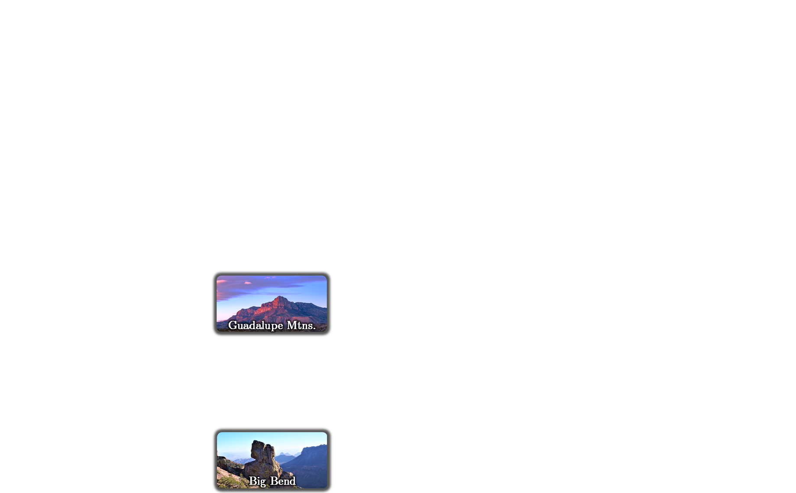

Howdy, my name is Joel, and I am from Pecos — the namesake of a major river in the valley of the Texas Mountain Trail in Far West Texas.
My hometown is quintessentially "Texan" — it is where the tradition of rodeo began & is the unofficial start of the great U.S. Southwest.
Moreover, Pecos is:
1) at the heart of the top area for oil and natural gas exploration and production in the Western Hemisphere — rivaling several OPEC countries —
& 2) between the two National Parks in Texas — Guadalupe Mountains NP & Big Bend NP.

That said, my interest in energy and resource policy — core to my research as a Ph.D. student — evolved rather naturally.
Previously a policy analyst in the Texas Senate, I am currently a Ph.D. student in the Government Dept. at Georgetown, splitting my time between Washington DC & Far West Texas.

I earned my master's degree from the Bush School of Government at Texas A&M University,

but where my heart truly lies is with the University of Texas — the keeper of my bachelor's.